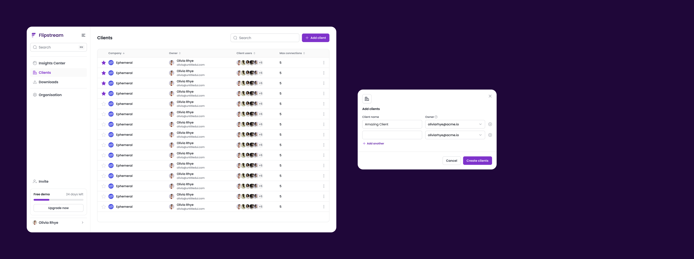

Clients
The Pulse app is structured into client spaces, mirroring real agency workflows.

Leading the design of a data insights platform built for marketing agencies to make faster, better decisions and streamline client reporting.

Users are trying to make decisions, not discover data.
Whether insights surface as tables, charts, or alerts matters less than how quickly users can understand and act on them.
The Pulse app is structured into client spaces, mirroring real agency workflows.
A single place to monitor performance across all managed clients, answering “What needs my attention today?”
Widgets are a flexible building block system for creating reusable data views. In the Widget Studio, users can easily extract KPIs without going through dashboards.
A curated dashboard library co-developed with a user test panel tailored to common agency use cases.
Advanced users can modify dashboards using predefined templates and widgets. This is designed to balance flexibility with control.
Users can adapt the data model to their own internal workflows so that the data works with existing processes.
An integrated Google Search Engine Results Page (SERP) Scraper enables users to track keyword rankings directly within Pulse, while creating cross-sell opportunities for the business.